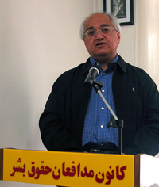

پذيرش > تریبون > مقالات > حکومت می خواهد خشونت را به جنبش زنان ایران تحمیل کند اما نباید اسیراین خشونت (...)


 حکومت می خواهد خشونت را به جنبش زنان ایران تحمیل کند اما نباید اسیراین خشونت شد حکومت می خواهد خشونت را به جنبش زنان ایران تحمیل کند اما نباید اسیراین خشونت شد
16 آبان 1386 - متن سخنرانی بابک احمدی در کنفرانس مطبوعاتی کمیته زن کانون مدافعان حقوق بشر /13 آبان - نسخه قابل چاپ
بابک احمدی با ابراز خوشحالی از تشکیل کمیته زنان در کانون مدافعان حقوق بشر از اعلام حکم دلارام علی ابراز تاسف کرد و اعتقاد به نابرابری را اساس بروز خشونت علیه زنان دانست :
انسان ها وقتی بدنیا می آیند یک سری چشم و گوش و دست و پا با خودشان می آورند و اگر در نظامی مجبورشوند که یکی از آنها را به دلایل اقتصادی از دست بدهند، می گوییم که نظام اقتصادی آن جامعه فاسد است ونظام حکومتی را مقصر می دانیم. اما آدم ها اعم از دختر وپسر وقتی به دنیا می آیند،غیراز این جسم، یک رشته حقوق هم با خودشان به دنیا می آورند. این حقوق بین آنها برابر است و در میثاق حقوق بشر هم روی این برابری تاکید جدی شده است . حال اگر یک نظام به هر دلیلی این حقوق را از آدم ها بگیرد، ویا آنها را قانع کند که این حقوق را ندارند و نباید داشته باشند ما این نظام سیاسی ، اخلاقی و فرهنگی را هم مانند همان نظام اقتصادی فاسد می دانیم و فکر می کنیم نظامی که حق آدم ها را ازشان بگیرد به نابرابری بین آدم ها قائل است.
ریشه ی بی اعتمادی در جامعه قائل شدن به نابرابری و حقوق نابرابر است .من هم موافق نیستم که تصور کنیم که همه زن ها این حقوق را می خواهند که اگر چنین بود که مسائل حل بود. مشکل ما این است که مردم سالاری قرن ها و این نابرابری عمیقی که درزندگی اجتماعی بوده و جلوه اش در زندگی فرهنگی، اخلاقی و حقوقی متجلی بوده است، بخش قابل توجهی از زنان ما را قانع کرده که این حقوق را نخواهند، که ندارند و حتی نگاه های ضد زن درآنها تشدید شود. این وضعیت زنان ایران نیست در همه دنیا در همه اقشار تحت ستم چنین است.
یکی از اهداف ما در مبارزه مسالمت آمیزی که داشتیم و به هیچ وجه هم خواهان آن نیستیم که به شکل رادیکال پیش ببریم، دفاع از حقوق مان برای بهبود زندگی زنان و نسل های بعدی و حتی مردان است. برای رسیدن به اینجا کارمان فرهنگی و بسیار سخت است . لبه تیز کار ما به سمت جامعه مردسالارو قوانین مردسالار است ولی برای تغییر و تحول کار فرهنگی مان باید در میان زنان این درک و آگاهی را به وجود آوریم که دارای حقوقی هستند و باید برای به دست آوردن این حقوق در همه شوون مبارزه کنند. خواه ناخواه حکومت هم می خواهد در تمام شوون این خشونت را به جنبش زنان ایران و به مبارزات زنان تحمیل کند و نباید اسیر این شد وباید همچنان درخواست های دمکراتیک مان را از راه های مسالمت آمیز پیش بریم.
من که در جریان فعالیت این نهضت پویای زنان بوده ام می بینم که شما در این چند ساله با کمپین یک میلیون امضا، با فعالیت هایتان و نوشته هایتان در همه جنبه ها حضور داشته اید. هر وقت مردی را دستگیر کردند شما بودید. هر وقت فشاری بر جامعه آمد ما صدای شما را شنیدیم . شما فهمیدید که حقوق دموکراتیک به هم پیوند خورده است در حالیکه بسیاری از اهل فرهنگ و روشنفکر ما هنوز نفهمیده اند. ولی در این چند ساله جای امیدواری هم پیدا شده است. دائما می بینیم که عده بیشتری از مردها به طرف این نهضت کشیده می شوند و می بینند که آزادی شان در گرو آزادی زنان است. حتی من این را در بین روشنفکرانی هم می بینم که قبلا به نابرابری بین زن و مرد اعتقاد داشتند اما حالا برای برابری آن تلاش می کنند و اینها به ما امید می دهد که این مبارزه را ادامه دهیم و حتما خواهیم برد. اصل برابری آدم ها مهم است ولی درک آن باعث می شود که برای رسیدن به آن از خیلی چیزها بگذریم که شما این را ثابت کرده اید. من از شما ممنونم. ما مردها که در اینجا هستیم دست کم فهمیده ایم که حق برابر با شما داریم. من خودم در شرایط خانوادگی و سال های کودکی ام این را فهمیدم ولی مهم این است که جامعه به این برسد که کار سختی است آن هم با حکومتی که این همه مانع در برابررساندن دانایی به دیگران ایجاد می کند.
ارسال به
بالاترین
،
توییتر
،
فریندفید
،
فیسبوک
در همين بخش :
 دهمین دورۀ مراسم تندیس صدیقه دولت آبادی ۱۳۹۲ دهمین دورۀ مراسم تندیس صدیقه دولت آبادی ۱۳۹۲
کارت پستالهایی به بهانهی هشت مارس و به یاد همهی مبارزین راه برابری
بیانیه بیش از 350 تن از مدافعان حقوق زنان به مناسبت روز جهانی زن؛ زنان هر روز فرودستتر میشوند
لباسی که برای تن ما دوخته اند! /اعظم بهرامی
چالشها و چشمانداز فعالیت مدنی زنان
ديگر بخش ها :
طرح یک میلیون امضا
|
مقالات
|
سایت نوشته ها
|
اخبار
|
گزارش كمپين
|
گفت و گو
|
علیه سکوت
|
كوچه به كوچه
|
نامه های شما
|
گزارش ویژه
|
گفتگو با اعضا
|
ویژه سالگرد کمپین
|
تصویر برابری
|
دل آرام علی
|
تریبون
|
مقالات
|
تاریخ شفاهی
|
خارج از چارچوب
|
کتابخانه
|
درباره کمپین
|
کمپین در شهرها
|
کمپین در بند
|
صدای تغییر
|
ویژه 22 خرداد
|
لایحه حمایت از خانواده
|
گالری
|
عشا مومنی
|
امیر یعقوبعلی
|
خدیجه مقدم
|
راحله عسگری زاده و نسیم خسروی
|
پروین اردلان،جلوه جواهری، مریم حسین خواه، ناهید کشاورز
|
زینب پیغمبرزاده
|
سعیده امین، سارا ایمانیان، محبوبه حسین زاده، ناهید کشاورز و همایون نامی
|
احترام شادفر
|
نسیم سرابندی زاده،فاطمه دهدشتی
|
وبلاگ مهمان
|
پرونده خرم آباد
|
دستگیری ها
|
مریم مالک
|
پرستو اللهیاری
|
مهرنوش اعتمادی
|
سمیه رشیدی
|
Other Languages
|
همراهان
|
«فراخوان کمپین ده روز با بهاره هدایت»
| English
|